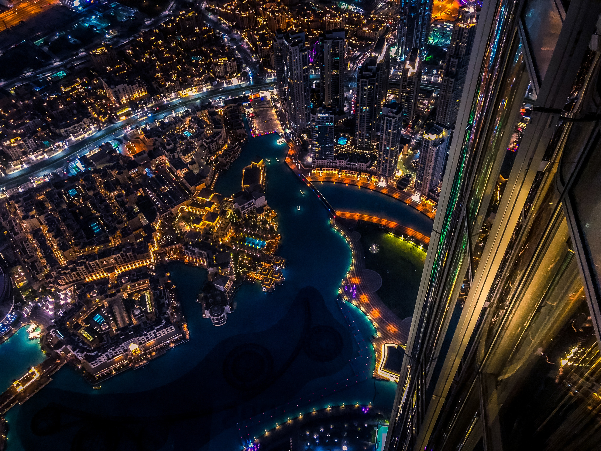
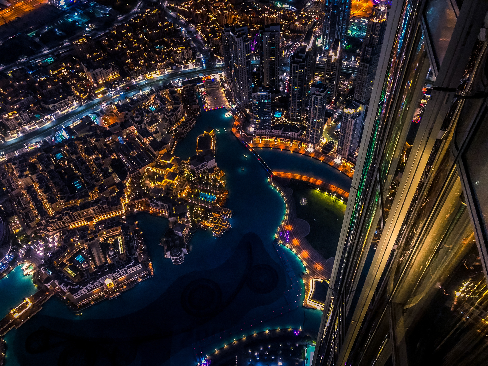

Recently I have visited these countries
- Iceland
- Dubai
- Saint Martin Island
- South Africa


Iceland is a stunning destination that offers a variety of natural wonders, cultural attractions and outdoor activities. Whether you want to see the Northern Lights, soak in a geothermal pool, explore a glacier or visit a quirky museum, Iceland has something for everyone. Here is a sample travel blog post about Iceland: Iceland: A Land of Fire and Ice I have always dreamed of visiting Iceland, the land of fire and ice. So when I found a cheap flight deal online, I didn’t hesitate to book it. I decided to spend a week in this amazing country, exploring as much as I could. I started my trip in Reykjavik, the capital and largest city of Iceland. Reykjavik is a vibrant and colorful place, with plenty of things to see and do. I visited the iconic HallgrÃmskirkja Church, which towers over the city skyline. I also checked out the Harpa Concert Hall, a stunning glass building that reflects the light and the water. I enjoyed walking around the old town, admiring the street art and the cozy cafes. And of course, I had to try some of the local delicacies, such as skyr (a thick yogurt), pylsur (a hot dog with various toppings) and hákarl (fermented shark). But Reykjavik was just the beginning of my adventure. I rented a car and drove along the Ring Road, the main highway that circles the island. Along the way, I witnessed some of the most breathtaking scenery I have ever seen. I stopped at Thingvellir National Park, where the North American and Eurasian tectonic plates meet. I marveled at the Geysir geothermal area, where hot springs and geysers erupt every few minutes. I was awestruck by the Gullfoss waterfall, where a massive amount of water plunges into a canyon. And I was enchanted by the Seljalandsfoss and Skógafoss waterfalls, where rainbows formed in the mist. But that was not all. I continued my journey to the south coast, where I saw black sand beaches, basalt columns and sea stacks. I visited the Jökulsárlón glacier lagoon, where icebergs float on a turquoise lake. I hiked on the Skaftafell glacier, where I felt like I was on another planet. And I camped under the stars, hoping to catch a glimpse of the elusive aurora borealis.

 

Dubai is a city that never ceases to amaze me. It’s a place where tradition meets modernity, where skyscrapers rise above the desert, where luxury and glamour are everywhere. I spent a week in Dubai and I had the time of my life. Here is a sample travel blog post about Dubai: Dubai: A City of Wonders I have always wanted to visit Dubai, the city of wonders. So when I found a great deal online, I booked it without hesitation. I was ready to explore this amazing destination that has so much to offer. I arrived in Dubai International Airport, one of the busiest and most advanced airports in the world. I took a taxi to my hotel, which was located in Downtown Dubai, the heart of the city. I checked in and admired the view from my window. I could see the Burj Khalifa, the tallest building in the world, towering over the skyline. I couldn’t wait to see it up close. The next day, I decided to visit the Burj Khalifa and the Dubai Mall, which are connected by a walkway. I bought a ticket online and took the elevator to the 124th floor, where I enjoyed a panoramic view of the city and beyond. I was blown away by the sight of the Arabian Gulf, the Palm Jumeirah and the World Islands. I also visited the SKY lounge on the 148th floor, where I felt like I was on top of the world. After that, I went to the Dubai Mall, the largest mall in the world by total area. It has over 1,200 shops, 200 restaurants, an aquarium, an ice rink, a cinema and more. I spent hours browsing through the different sections, from fashion to electronics to souvenirs. I also watched the Dubai Fountain show, which is a spectacular display of water, music and lights. But Dubai is not only about shopping and skyscrapers. It also has a rich culture and history that I wanted to discover. So I booked a tour that took me to the old part of the city, where I visited the Al Fahidi Historical Neighbourhood, which showcases the traditional architecture and lifestyle of Dubai. I also visited the Dubai Museum, which is housed in an old fort and displays artifacts and exhibits about the history and heritage of Dubai. And I took an abra (a wooden boat) across the Dubai Creek to explore the souks (markets) of Deira, where I bargained for spices, gold and perfumes. One of the highlights of my trip was going on a desert safari. I joined a group that drove in 4x4 vehicles through the sand dunes, where we experienced some thrilling dune bashing. We then arrived at a campsite, where we enjoyed a barbecue dinner, camel riding, henna painting and belly dancing. We also watched the sunset over the desert, which was a magical sight. I had so much fun in Dubai that I didn’t want to leave. It was a city that surprised me with its diversity, its beauty and its charm. It was a city that made me feel alive. It was a city that I will never forget.
.jpeg)
 (1).jpg)
 (1).jpeg)
Saint Martin Island is a hidden gem in Bangladesh, a country known for its natural beauty and cultural diversity. It is the only coral island in Bangladesh, and one of the most serene and scenic places I have ever visited. Here is a sample travel blog post about Saint Martin Island: Saint Martin Island: A Paradise in the Bay of Bengal I have always been fascinated by islands, especially those that are remote and untouched by mass tourism. So when I heard about Saint Martin Island, a small island in the Bay of Bengal, I knew I had to go there. I booked a flight from Dhaka to Cox’s Bazar, the longest sea beach in the world, and then took a bus to Teknaf, the southernmost point of Bangladesh. From there, I boarded a ferry that took me to Saint Martin Island, a journey of about 3 hours. As soon as I arrived, I was greeted by the friendly locals, who call the island Narikel Jinjira (Coconut Island) or Daruchini Dwip (Cinnamon Island). I checked in to my guesthouse, which was a simple but cozy bamboo hut near the beach. I rented a bicycle and decided to explore the island, which is only 8 km long and 1 km wide. I was amazed by the beauty and tranquility of the island. The beaches were pristine and peaceful, with crystal clear water and white sand. The coral reefs were colorful and vibrant, teeming with fish and other marine life. The coconut trees were swaying in the breeze, providing shade and fresh coconuts. The island was also home to various birds and animals, such as doves, kingfishers, monkeys and deer. I spent my days relaxing on the beach, swimming in the sea, snorkeling in the coral reef, and cycling around the island. I also visited some of the attractions on the island, such as the Saint Martin Lighthouse, which offers a panoramic view of the island and the sea; the Chera Dwip, a small uninhabited island that is separated from Saint Martin Island by a shallow channel at high tide; and the West Beach, which is famous for its sunset views. I also enjoyed the local cuisine, which was mainly seafood-based. I tasted some of the delicacies of the island, such as fried fish, crab curry, lobster barbecue, and coconut water. The food was fresh and delicious, and very affordable. I had a wonderful time on Saint Martin Island, and I felt like I had discovered a paradise in the Bay of Bengal. It was a place where I could escape from the hustle and bustle of the city life, and reconnect with nature and myself. It was a place that I will always remember and cherish.


South Africa is a country that offers a unique blend of wildlife and city life, where you can experience the best of both worlds. Whether you want to see the Big Five, explore the diverse landscapes, or enjoy the vibrant culture and nightlife, South Africa has something for everyone. Here is a sample travel blog post about South Africa South Africa: A Wildlife and City Life Adventure I have always wanted to visit South Africa, a country that has been on my bucket list for a long time. I was drawn by its rich history, its diverse culture, and its amazing wildlife. I decided to spend two weeks in this incredible country, and I was not disappointed. I started my trip in Johannesburg, the largest and most populous city in South Africa. Johannesburg is a city of contrasts, where modern skyscrapers coexist with historic buildings, where affluent suburbs are surrounded by sprawling townships, where art and culture flourish amid social challenges. I visited some of the landmarks of the city, such as the Apartheid Museum, which tells the story of the racial segregation and oppression that shaped South Africa’s history; the Constitution Hill, which is a former prison and now a museum and a symbol of democracy; and the Soweto Township, which is home to millions of people and was the epicenter of the anti-apartheid movement. I also enjoyed the nightlife of Johannesburg, which is lively and diverse, with plenty of bars, clubs, restaurants and live music venues. After exploring Johannesburg, I flew to Cape Town, the legislative capital and one of the most beautiful cities in the world. Cape Town is nestled between the Atlantic Ocean and the Table Mountain, which dominates the city’s skyline. I took a cable car to the top of the mountain, where I enjoyed a stunning view of the city and the sea. I also visited some of the attractions of Cape Town, such as the Robben Island, where Nelson Mandela was imprisoned for 18 years; the Victoria & Alfred Waterfront, which is a bustling shopping and entertainment district; and the Cape Peninsula, which is a scenic drive along the coast that leads to the Cape of Good Hope, the southwesternmost point of Africa. But Cape Town is not only about city life. It is also a gateway to some of the most spectacular natural wonders in South Africa. I joined a tour that took me to see some of these wonders, such as the Cape Winelands, which are famous for their vineyards and wine tasting; the Kirstenbosch National Botanical Garden, which showcases some of the unique flora of South Africa; and the Boulders Beach, which is home to a colony of African penguins. But my trip would not be complete without seeing some of the iconic wildlife of South Africa. So I booked a safari that took me to one of the best game reserves in the country: Kruger National Park. Kruger National Park is one of the largest and oldest national parks in Africa, covering an area of almost 20,000 square kilometers. It hosts more than 500 species of birds and 150 species of mammals, including the Big Five: lion, leopard, elephant, rhino and buffalo. I stayed in a comfortable lodge inside the park, where I enjoyed delicious meals and friendly service. I went on game drives every morning and evening, where I saw some of the most amazing animals in their natural habitat. I was lucky enough to see all of the Big Five, as well as other animals such as giraffe, zebra, wildebeest
About Me
Nihab Rahman is a Documentary Filmmaker & Photographer based in Asia who is currently working for several Nonprofit Organizations throughout Bangladesh. Also working for travel agencies to produce travel films & photographs as a solo traveler. Owns a print selling business on Instagram where to sell landscape, aerial, street, travel & adventure photo prints @ Nihab Rahman. "I have been lucky to explore the beauty of Thailand and Nepal with Books Unbound (a nonprofit organization dedicated to providing informal learning opportunities for marginalized communities). The beauty and culture outside of my country inspired me to travel more and more. My wish for the future is to travel the entire world to take photos & make videos, finding something new to discover with each journey. I want to repeat the journey over and over to find more than I could ever expect. My definition of a successful artist is to have a platform for others so they can taste my journeys through the snapshots and memories I have created." I love sharing local stories to highlight the beauty of Bangladesh. What really inspired me for exploring different styles of photography are the people around the world who are harnessing photography & filmmaking as both their passion and a full-time job. I decided to inspire others through my photos & films, just as I was inspired by those around the world who are dedicated to their photography & filmmaking. The never-ending chance of capturing and creating photographs & films gives me the reason behind continuing this journey."